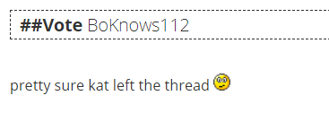
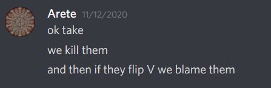
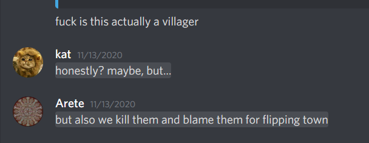

He’s got that dad energy
He left to go host Dangan 
 dad energy?
dad energy?
1 Like
arete you’re on D2 can you please just

1 Like
meh whatever

1 Like
kat Iso
this is all ignoring claim stuff because I don’t believe the claim and also if kat is actually the vig then maybe this will help show my process or whatever
think this comment is slightly non W/W with Mist, not lockclearing but +village points for her
I know I said this at the time but I’m not a fan of the openwolfing, obviously that’s tempered a bit by the fact that it’s coming from kat but in my experience with kat she mostly only openwolves as town if she has, like, at least 20 percent of a reason, whereas here there’s basically no reason at all
(also I remember Mist joking a lot about being Mafia and I think she would have been more likely to do that if she had someone like kat for a partner and picked up on a little bit of her humor)
more openwolfing, again for no real reason
she keeps the lolcats up for a little bit, I’m not going to quote every single post where she’s like ‘I am a wolf’ and be like ‘wow kat is calling herself a wolf’
marking this read to see if she pays attention to it, like, at all come day 2
I don’t want to hold this against her too much because I also thought some early Mistposts were townie, going to mark this to see how she progressed w.r.t. Mist
WOWEE
kinda feel like she’s TMIing me V here, like she doesn’t really consider the possibility that I could be a wolf and defend wolf Vul
although to be fair that ends up being mitigated a bit by this
another point to keep in mind re:D2
(n.b. this was about Conroy)
this interaction isn’t great, I feel like she’s trying to avoid actually taking a stance on DatBird
this is a slightly better look, IIRC this was before Dat really came under much suspicion? not positive
keeping this one in mind for D2 too
maybe I just noticed it extra much because it’s on me, but kat’s progression on her me read is … not really there
like I kind of feel like she’s only pushing me now because everyone she wanted to miselim turned out to be mechclear
like
kat knows my play fairly well, she knows I’m a sucky obvious wolf as wolf
I don’t believe that she believes that I would be able to fool V!katze to the level I would have had to fool her on D1 in order to be a wolf this game
this post is slightly villagery, mostly for the specific way kat’s being snarky? like obviously any alignment can be snarky but this feels like villager snark
this line here also feels slightly villagery
‘why’
‘gut’
so if you aren’t vig here does that make you automatically a wolf
if this were coming from any other player I’d be like ‘yeah I don’t think they would say it about a partner’ but I think kat might actually say this as W/W with Dat
continuing her townlean on Mist
it’s not horrible but not great either
this feels kind of non W/W with DatBird
don’t really like this, in my experience random pinging a wolf to ask a useless question is >rand wolf-trying-to-force-an-interaction
words
hm
she does seem to have some Conboy progression between D1 and D2?
this is the first time she moves Mist down below null
it’s … fine, I guess? not sure if W!kat could really justify continuing to townlean Mist with how underwhelming Mist has been this game
really not a fan of this post, it’s trying to argue that we shouldn’t cuddle Dat without even making a take on Dat’s alignment, which is something I see a lot from wolves who are trying to defend their partners but are worried that if they actually call them town it’ll associate them
extra mrrr about that given that she had Dat as >rand W
feels slightly non-W/W with Mist, I don’t super think that ‘let’s vote Mist because it’s funny’ is the approach that someone would take if they wanted to bus her, I think a busser would be more likely to go ‘Mist is wolf ’
also I was like ‘would a wolf really be like “let’s not yeet wolf A, instead let’s yeet wolf B”’ but Mist was vanilla and Dat was a PR so actually that’s super plausible
progression on Mist seems semi-decent, I basically follow how she got from ‘Mist >rand V’ to ‘Mist kinda sus’
also kat: ‘why aren’t you trying to read me’
this is fine
it would be better if she actually voted Mist here
but it’s not an awful post
this kinda feels like another soft-defense of a wolf that doesn’t really take an actual stance
feels slightly not W/W with Mist, there was a chance of Hippo actually voting Mist and if kat had been forced into a scenario where she had to hammer before Mist could claim a PR that probably would have been minus-EV for scum
this is a pretty meh response to the claim especially given that Hippo was the other major wagon
this is extra setting off alarm bells for me because earlier today kat tried to defend herself by pointing out that when she tried to not vote out Mist it could have put Dat in danger
but not only was Dat not a wagon, kat specifically said to CFD Hippo rather than Dat

this feels kind of self aware
…kinda think this could maybe explain why Marshal died N1 despite being obvVT, if kat was annoyed with Marshal and didn’t really think she could win going into N1
like it’s not really a good kill for kat to make? but it’s not really a good kill for anyone to make
and kat killing someone who’s making the game not enjoyable for her is semi plausible if she doesn’t think she can win
just going to pull up this as another read that kat seems to have mysteriously forgotten existed 
joycat
this is like
technically she’s pushing a Goon over a PR but I don’t actually think that’s wolfy given that Mist was literally outed and Dat was not literally outed
DAY 2 STARTS HERE
this doesn’t really feel like it makes sense with kat’s progression on Conroy yesterday
like he did start to doubt his read on Conroy but not to the extent that it makes sense to have Conroy as just straightup the last wolf
given the extent to which kat was shading people by which I mean me but that’s not the point for quickhammering Conroy and acting like it was totally unreasonable that we were treating Conroy as a given up wolf I think it’s kind of that she was doing … literally the same thing
especially given that she was townreading Conroy on D1
I still hate “joking” openwolving posts like this one
like kat came into D3 with a whole point where she was like ‘omg Arete was boxing Conroy in by believing his openwolfing claim!!’ but given how kat treated him I feel like she was projecting
ehh
normally this would be slightly villagery but given that I’m pretty sure wolves must have figured out I was VT by that point I think maybe that doesn’t apply
DAY 3
just noting this down for kat’s nonsensical progression on me, like, even early day 3 they’re still calling me out-of-my-wolfrange (which, like, I am)
and this was a post I really didn’t like from kat, even at the time
like I’m trying to look at it unbiasedly given that it’s on me (obviously modulo things like ‘I know what happened in hydra chat’) and it feels like … you both aren’t really trying to engage with my thought process there, and are misrepresenting what happened in the hydra game?
like you’re not trying to figure out ‘does Arete believing Conroy’s wolfclaim indicate that they’re a wolf pushing agenda, or a villager who doesn’t know who the wolves are’ you’re just going ‘aret push conroy aret bad!’
(also frankly this seems more like a description of kat’s D2 play than anything, you lwent out of D1 with Conroy as V-ish and D2 you were like ‘let’s quickhammer! lol! I am TMIing you V!’)
and then the second thing is … it feels like a misrepresentation of what I said in hydra chat and in the game thread? like in the game thread I was like

{kind=link}

and even in hydra chat I was like

(I said that^ like three times)
and even when the other head came in and was slightly villagery, I was like

kat’s misrepresenting what I actually said in hydra chat + the game thread which is … super wolfy, actually
like
I guess technically saying in hydra chat ‘kill them, if they flip town we blame them after’ is acknowledging the possibility that they could be town, but
this is basically the only thing I find even slightly villagery about that exchange, like, maybe if she were a wolf she wouldn’t outright insult me like that?
she also … completely reverses her read on me just based off of that point, her progression there feels really unnatural
then later today when she starts to defend herself she says things like
which I think is basically saying ‘but I can’t be a wolf, I would have bussed harder’ which is not a great argument unless it’s being applied to literally Alice, your wolfrange is wide enough to include both bussing your partners and hard defending them
also, like, 3I/4I (sort of, depends on which wolf roles die first)/5I/3P/4P/5P/6P all get way stronger once two wolves die so I think it’s more likely that you would resort to things like ‘Dat is kind of wolfy but don’t kill him today because he’ll be easy to read tomorrow’ just to try to buy a day or two more when they aren’t getting peeks
uhhhhhh
you unvoting at some point and being like ‘maybe we shouldn’t quickhammer?’ doesn’t cancel out the thing where you were like ‘let’s quickhammer Conroy’
that’s not how this works
her D3 reads include a lot of ‘Geyde/Hippo/Solic PoE’ which is coincidentally exactly the mechclears but I was basically at Geyde/Solic/maybe sorta kat PoE so I don’t entirely think that’s wolfy
this is kinda meh, like the effort is nice but it doesn’t … do anything, you basically didn’t draw conclusions from it at all
like the closest thing to alignment relevant comments are you using it to V-read sulit and you using it to sort of but not really shade Ici
the rest of it is claim stuff/asking me to read her
Overall Conclusions
(again this is discounting vig stuff, I super don’t buy the claim regardless of her alignment)
overall, there are a few things that gave me slight V pings or looked not W/W, but also some things that I really don’t like and some super interactions
her D1 is definitely the strongest day, D2/D3 is where she started blatantly contradicting herself/lying about things she did (e.g. trying to claim that she never wanted to hammer Conroy)/etc. and basically all the posts that gave me village pings were on D1
also, comparing my reasons for townreading her with my reasons for townreading other people, I think that she’s the most likely to be able to fake any of it – Ici and sulit don’t have very strong wolf games, and orange really doesn’t like bussing, whereas I’m confident that ‘writing posts that give me slight V pings’ is well within kat’s wolfrange
overall, having read her posts ( ) I think she has a fair amount of wolf equity. there were a few things that gave me pause, but nothing that really strongly made me doubt my read here
) I think she has a fair amount of wolf equity. there were a few things that gave me pause, but nothing that really strongly made me doubt my read here besides ‘I guess if she’s the vig she’s mechconfirmed and I’m hardclearing a wolf’
why do I do this to myself
that was underwhelming
1 Like
did you even read it
yes
i read fast
i am currently responding to it more indepth tm
cya in ~12 hours
1 Like
Summary
the last ~24 hours have been frustrating because I feel like I’m the only one who’s actually trying to solve
like occasionally someone is like ‘look I made a chart of numbers that I will now refuse to explain’ but no one else is actually digging into trying to solve people’s alignments
which, like, it’s kind of fair because we’re close to mechlock, so I get why people might not really care about actually trying to put in work? but it’s still frustrating
is anyone here other than wölfin
that joke was funnier in my head
i will do the good person thing and put this in a spoiler because its very long
my reason is that it’s funny and i’m proving further that it’s NAI for me
mostly the former
also like, flip this around, why would i do it as a wolf
to be clear im not saying “townread me for openwolfing :wowee:” but… if you’re gonna ask one question, you gotta at least ask the reverse
am i doing it as a wolf because i’ve given up? in that case, i don’t think my play supports it at all
am i doing it for towncred? i’ve said multiple times its NAI but i mean, that doesn’t mean people will believe me ig
its NAI and you overthinking it is silly 
i… this is a take?
i get it? it’s a take i think you can have as either alignment, i guess?
i don’t really have a response to this
you’re literally the only person who wants me dead today so it almost worked :’)
you mitigated this so i don’t have to call the take dumb
but like, how else am i gonna word the message
“that post didn’t feel excessively forced and if you’re a wolf me and arete (if they are a villager) will probably stab you by EoD1” is like, so blatantly fucking self aware and stupid
(this post was a joke)
okay so like
sure, that’s a take
i had a bad gut feeling about the post and stated said feeling
i acknowledged that my gut feeling wasn’t heavily backed up by facts or logic
but feelings don’t care about facts
with how long this took i’d expect you to have checked this
- im pretty sure i called your D2 shit way before my PoE got mechcleared, and acknowledged that you were probably still a villager but not lock V anymore
- this changed when my entire PoE became mech clear, yes, because… clearly my PoE is wrong! my readlist was literally everybody above the null line except my PoE! wowee!
:wowee:
i want to argue with this but i don’t know how much i can
wow its almost like i don’t have TMI that she isn’t a villager and am maintaining an earlygame read on somebody
read context please
if you’re gonna take a millennium to do an iso at least look at the context for some posts you find questionable out of context jeez
because my read on dat was “they aren’t blatantly a wolf but they aren’t blatantly a villager when they are very capable of being blatantly a villager as a villager, which is >rand W for them”
im standing by that post because i think it makes perfect sense
i also think i never write that post as a wolf but lolselfmetawhenyouthinkmymetaisimpossibletoreadinto
okay so in this world im a hardbusser
where is me hardbussing lol
arete: kat is a wolf because i haven’t read any of their posts and i think everybody else is kinda villagery
also arete: why is kat annoyed that im not reading any of their pots
i backspaced a very rude sentence here so im typing this instead
hilariously vulgard said the exact opposite, that me not voting mist made this most more villagery
wow im soft defending somebody i enjoy talking to
i am a wolf for having a friend who is also a wolf
???
oh no katze wanted to vote out a villager instead of a wolf because the wolf claimed PR and i, as a villager, would rather let a PR resolve instead of potentially MLing a PR or forcing too many D1 claims :wowee:
also hippo was my next highest scumread, so yes, i’d rather vote them over a claimed PR
how absurdly wolfy of me
(also, like, this was early enough in the day that i’m still putting my rolecop in danger as they aren’t popular in thread by not just hammering down on mist, which was my point earlier; my proposition wasn’t directly onto dat but i was putting them in danger by not killing mist early)
also i was gonna point this out at the end but im gonna do it now
if im a wolf with mist, what am i doing
im very blatantly saying in thread i think she’s a wolf, so if im W/W with her then im totally fine bussing, so its not like my gameplan as a wolf here is “powerwolf keep my teammates alive at all costs” (this is further backed up in my EoD wallpost which you don’t even mention once, where i, despite putting Dat as one of my higher null reads, still say that Dat is in my theoretical wolfteam and that we should kill Dat before Solic)
like, if im a wolf im bussing, but im not hardbussing
if im katze, a player who is not going to be metaread town like, ever, i need to do drastic plays to win this as a wolf
my treatment of dat/mist doesn’t show that. im not powerwolfing hard, im not hardbussing, i’m… a villager, lol
im glad you pointed out this post because i was sad you didn’t earlier
openwolfing = NAI
i dont kill marshal because my D1 very obviously shows i don’t think he’s a PR
i actually believed your PR claim and you would have died N1 or another PR read of mine if i wanted to doc dodge
okay, i don’t really want to use this as an argument, but it’s technically a katze meta argument which means it’s invalidated by my clearly indistinguishable metas
do you remember how i acted in vanilla nightless scumchat when i knew i was going to die
that’s… all i’ll say, lol
also random note that if im a wolf and want to win this game i 100% keep marshal alive because i need someone with competence reading me to misclear me to win after that D1
i also probably don’t N2 vul for this reason im more likely to N1 vul because it’s funnier and because they were the most obvious villager in the game
idr if i responded to this general notion earlier
so im gonna just use an analogy
i am joy_nerd
you are dya/amy
you have been refuted using facts and logic, now stop with this
and when push came to shove i unvoted conroy because the quickhammer posts were obvious jokes
ftr im pretty sure i played my scumread of conroy up on D2 because i wanted to pressure him
i believe i noted that earlier but you’ve read my posts more recently than me so you’re free to say otherwise
i mean those actually had more purpose behind it so i’ll bite
i “TMIed” conroy V because if i was right it’s funny and if i was wrong the game ends anyway and it doesnt matter
how is this your conclusion after quoting 4 joke posts and one self aware half joke post (the last one where i imply that we should kill all openwolfers)
okay
no, im not
you literally quoted the post i was thinking of when i said that
“is this actually a villager” implies you are still reading a slot who has openwolfed, which you did not do with conroy
and like, why the fuck would i lie about shit that you can verify when im the last wolf alive when it’s like, at best, i ML you and then get killed because you call me out for it before dying
its like killing in front of someone in among us except theres 8 crewmates alive and you’re the only imposter
i might get the ML but i still die right after
yes, it is
but this also acknowledges that im competent enough to know how to win games
i kind already went over this earlier so i won’t do it again but :wowee:
you’re… failing to consider a villager perspective here (and have done this multiple times) but
sure, if im a wolf, that’s probably why i make those posts in question
if im a villager (hint, i am) i… well, i already went over that, this post is getting too long
j
o
k
e
s
joy
cat
joy
cat
joy
cat
what
i literally commented on his posts being lower than expected thats
what
what
???
at least you’ve read my posts now
your arguments are still reeking of an extremely narrow perspective
you comment on how things make sense if im a wolf but ignore that they make sense as a villager
you disregard context in multiple key comments
zzz
1 Like
i felt my sanity and patience fumble reading that and im not happy about it from an out of game perspective
the worst part of all of this is im irrationally annoyed to the point where i don’t trust myself to actually judge if that ISO is W/V Arete
which was literally the entire point of all of this
god dammit
1 Like
also why don’t you think im the vig when ici is blatnatly not it if you read their posts lol
like, this entire argument is pointless
1 Like
ok I’m reading through your response and like
this applies to every not mechclear player but orange
and I don’t really think it’s orange
do you want me to quote every post that vaguely pinged me when I was Isoing you as a ‘kat is not the vig’ post
i mean geyde mentioned ici saying not to vig dat iirc
my play regarding PRs is very slippery regardless of role so the fact posts exist that are “katze is not a vig” indicative means nothing
1 Like
I feel like this is ignoring the posts that I quoted and was like ‘this could make sense from a village point of view’
like
yes
technically any post could be written by a villager
but I’m not going to respond to every post in your Iso with ‘well you see, kat saying X could come from a wolf but it could also come from a villager’
if a post is wolfy I’m … going to say that …
anyway ive decided
/vote sulit
this is the way
1 Like